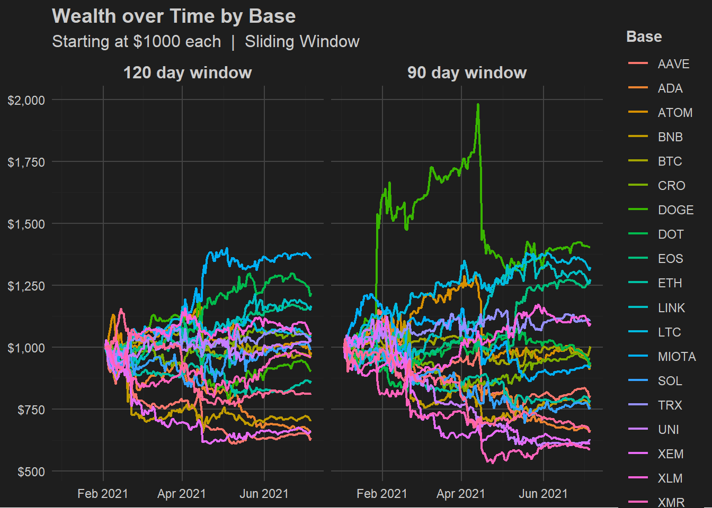

The foundation of this trading strategy is that traders will trade similar securities in a similar fashion. For example, consider two securities, whose prices are denoted as \(S_B\) and \(S_P\). We assume that traders expect these to move together. If \(S_B\) or \(S_P\) deviates from the other, we expect them to converge. This phenomenon can be exploited by buying one security and shorting the other. The following strategy will calculate which securities to short, which to buy, and in what quantities. It will also allow for more securities to be included, which can improve model performance.
Relating \(S_B\) and \(S_P\)
To describe the phenomenon explained in the overview, consider two securities denoted \(S_B\) and \(S_P\), where \(S_B\) is the “base security” and \(S_P\) is the “pseudo-security”.
Let \[S_{B,t} = S_{P,t} + \phi_t\] where \(\phi_t \in \mathbb{R}\).
While the base security (\(S_B\)) is just a single asset, the pseudo-security (\(S_P\)) is more complex. It is a linear combination of securities that follows \(S_B\). Thus, \(S_P\) is a synthetic asset built from other securities. By substituting \(S_{P,t} = \sum_{i=1}^{n} \gamma_i S_{i,t}\) we get: \[S_{B,t} = \sum_{i=1}^{n} \gamma_i S_{i,t} + \phi_t\]
where \(\gamma_i \in \mathbb{R}\).
All \(\gamma_i\) can be estimated using various methods. Here, least squares will be used, though gradient descent could give a less overfit model.
How to trade \(\phi\)
Using the formula \(S_{B,t} = \sum_{i=1}^{n} \gamma_i S_{i,t} + \phi_t\), solving for \(\phi_t\) gives: \[\phi_t = S_{B,t} - \sum_{i=1}^{n} \gamma_i S_{i,t}\] The \(\gamma_i\) provides weights for each security to be bought, with a weight of \(1\) for \(S_B\). Each security \(S_i\) will have \(\gamma_i\) shares bought. A negative \(\gamma_i\) indicates a short position.
Properties of \(\phi\)
Code
library(tidyverse)library(forecast)library(knitr)library(kableExtra)library(scales)library(purrr)# Folder containing all your CSVsfolder_path <-"C:/Users/Parker Smith/Desktop/crypto/data 2"# Get a list of all CSV files in the folderfiles <-list.files(folder_path, pattern ="\\.csv$", full.names =TRUE)# Read all CSVs and combine them into one data frameexclude =c('USDT', 'USDC', 'WBTC') # removed any constant or 1-to-1 coinssecurities_data <- files %>%lapply(read.csv) %>%bind_rows() %>%filter(!Symbol %in% exclude)securities_wide <- securities_data %>%select(Symbol, Date, Close) %>%# Keep only relevant columnspivot_wider(names_from = Symbol, # Column names come from the coin symbolvalues_from = Close # Values come from the Close column ) %>%arrange(Date) %>%drop_na()securities_wide$Date =as.Date(securities_wide$Date)n <-nrow(securities_wide)split <-floor(0.8* n) # 80% traintrain <- securities_wide[1:split, ]test <- securities_wide[(split+1):n, ]auto_lm <-function(df, response, alpha =0.05) {# start with all predictors except response and Date predictors <-setdiff(names(df), c(response, "Date")) formula <-as.formula(paste(response, "~", paste(predictors, collapse =" + "), "+ 0")) model <-lm(formula, data = df)repeat { pvals <-summary(model)$coefficients[, 4] # no intercept anymore max_p <-max(pvals, na.rm =TRUE)if (max_p < alpha) break# stop if all are significant worst_var <-names(which.max(pvals)) predictors <-setdiff(predictors, worst_var) formula <-as.formula(paste(response, "~", paste(predictors, collapse =" + "), "+ 0")) model <-lm(formula, data = df) }return(model)}model =auto_lm(securities_wide[ , !(names(securities_wide) %in%"Date")], 'BTC')fit =Arima(model$residuals, order =c(1, 0, 0), include.mean = F)
To examine \(\phi\), data from 23 cryptocurrencies will be used. The data is from 2020-10-05 to 2021-07-06.
\(\phi_t\) is essentially the residual from the relationship \(S_{B,t} = S_{P,t}\). If \(S_P\) follows \(S_B\) and they are thought to converge, then \(\phi\) should move toward \(0\). This suggests an autoregressive (AR) model. After testing various orders, the AR(1) model provided the best AIC, avoiding overfitting. This gives a new equation for \(\phi_t\):
\[
\phi_t = \lambda \phi_{t-1} + \sigma z_t \quad \; \lambda, \sigma \in \mathbb{R}
\] where \(z_t\) is a standard normal variable.
An AR(1) model can be fit to \(\phi\). This model will use all 23 cryptocurrencies in the dataset.
Code
# Simple data frame from ARIMA(1,0,0) model resultsfit <-arima(model$residuals, order =c(1, 0, 0), include.mean =FALSE)# Extract coefficients and standard errorscoefficients <-coef(fit)std_errors <-sqrt(diag(vcov(fit)))# Calculate t-values and p-valuest_values <- coefficients / std_errorsp_values <-2* (1-pnorm(abs(t_values)))# Get standard deviation of the shock (innovation standard deviation)shock_sd <-sqrt(fit$sigma2)# Create simple results data frameresults_df <-data.frame(Parameter =c(names(coefficients), "shock_sd"),Estimate =c(round(coefficients, 4), round(shock_sd, 4)),Std_Error =c(round(std_errors, 4), NA),t_value =c(round(t_values, 4), NA),p_value =c(round(p_values, 6), NA))results_df$Parameter[results_df$Parameter =="ar1"] <-"\\(\\lambda\\)"results_df$Parameter[results_df$Parameter =="shock_sd"] <-"\\(\\sigma\\)"kable(results_df, format ="html", escape =FALSE, row.names = F) %>%kable_styling(full_width =FALSE)
Parameter
Estimate
Std_Error
t_value
p_value
\(\lambda\)
0.5466
0.0507
10.7855
0
\(\sigma\)
1863.6285
NA
NA
NA
Using fewer securities gives parameters that reduce predictability of \(\phi\). The following is using only Ethereum and Bitcoin.
Code
BE_df = securities_wide[, c("ETH", "BTC")]model_BE =auto_lm(BE_df, 'BTC')# Simple data frame from ARIMA(1,0,0) model resultsfit_BE <-arima(model_BE$residuals, order =c(1, 0, 0), include.mean =FALSE)# Extract coefficients and standard errorscoefficients_BE <-coef(fit_BE)std_errors_BE <-sqrt(diag(vcov(fit_BE)))# Calculate t-values and p-valuest_values_BE <- coefficients_BE / std_errors_BEp_values_BE <-2* (1-pnorm(abs(t_values_BE)))# Get standard deviation of the shock (innovation standard deviation)shock_sd_BE <-sqrt(fit_BE$sigma2)# Create simple results data frameresults_df_BE <-data.frame(Parameter =c(names(coefficients_BE), "shock_sd"),Estimate =c(round(coefficients_BE, 4), round(shock_sd_BE, 4)),Std_Error =c(round(std_errors_BE, 4), NA),t_value =c(round(t_values_BE, 4), NA),p_value =c(round(p_values_BE, 6), NA))# Replace names with LaTeX symbolsresults_df_BE$Parameter[results_df_BE$Parameter =="ar1"] <-"\\(\\lambda\\)"results_df_BE$Parameter[results_df_BE$Parameter =="shock_sd"] <-"\\(\\sigma\\)"# Render table for HTMLkable(results_df_BE, format ="html", escape =FALSE, row.names =FALSE) %>%kable_styling(full_width =FALSE)
Parameter
Estimate
Std_Error
t_value
p_value
\(\lambda\)
0.9882
0.0078
127.005
0
\(\sigma\)
1887.5768
NA
NA
NA
Though \(\sigma\) is similar, the increased \(\lambda\) results in reduced trade profits and greater profit variance. This will be proved in the “Expected Returns” section. Because of this, more securities are preferred as it tends to provide lower \(\lambda\) and \(\sigma\).
Position Sizing
To size trades, log utility maximization will be used. This helps to prevent ruin. Wealth evolves according to: \[W_{t+1} = W_t (1 + f_t R_{t+1})\] where \(W_{t+1}\) is tomorrow’s wealth, \(W_t\) is today’s wealth, \(R_{t+1}\) is tomorrow’s return on a trade, and \(f_{t}\) is the fraction of wealth used in a trade.
Using log utility maximization we need to maximize: \[
\mathbb{E}\!\left[ \ln\!\bigl(1 + f_{t} R_{t+1}\bigr) \right]
\] Substituting \[
R_{t+1} = \frac{\phi_{t+1}-\phi_{t}}{C_t}
\] where \(C_{t}\) is the cost of purchasing \(\phi_{t}\). We then get: \[
\mathbb{E}\!\left[ \ln\!\biggl(1 + f_{t} \frac{\phi_{t+1} - \phi_{t}}{C_{t}}\biggr) \right]
\]
Since \(-\infty<\phi<\infty\) the expected value cannot be evaluated analytically. Instead, the second order Taylor approximation can be used. Higher orders can be used for greater accuracy. The new approximation is: \[
\begin{align}
\mathbb{E}\!\left[\ln\!\left(1+f_{t} \frac{\phi_{t+1}-\phi_{t}}{C_{t}}\right)\right]
&\approx
\mathbb{E}\!\left[f_{t} \frac{\phi_{t+1}-\phi_{t}}{C_{t}}
- \frac{1}{2}\left(f_{t} \frac{\phi_{t+1}-\phi_{t}}{C_{t}}\right)^2\right] \\
&= \frac{f_{t}}{C_{t}}( \lambda-1 ) \phi_{t}
- \frac{f_{t}^2}{2 C_{t}^2} \big[(\lambda-1)^2 \phi_{t}^2+\sigma^2\big]
\quad \text{using } \phi_{t+1}=\lambda\phi_t+\sigma z_{t+1}
\end{align}
\] By maximizing with respect to \(f_t\) we get our trade size to be: \[
f_t = -\frac{C_{t}(1-\lambda)\phi_t}{(1-\lambda)^2\phi_t^2+\sigma^2}
\] where \(C_t\) is the cost of purchasing \(\phi_t\), \(\lambda\) is the AR(1) coefficient, and \(\sigma\) is the standard deviation of the noise. Note that a negative fraction of wealth implies a short position.
Expected Returns
Using our chosen trade size, we can compute a trade’s expected return on wealth: \[
\begin{align}
\mathbb{E}\!\left[1 + f_t R_{t+1} \,\middle|\, \phi_t\right]
&= 1
- \frac{C_t (1 - \lambda)\,\phi_t}{(1 - \lambda)^2 \phi_t^2 + \sigma^2}
\cdot \mathbb{E}\!\left[\frac{\phi_{t+1} - \phi_t}{C_t}\right] \\[6pt]
&= 1
- \frac{(1 - \lambda)\,\phi_t}{(1 - \lambda)^2 \phi_t^2 + \sigma^2}
\cdot \mathbb{E}\!\left[(\lambda - 1)\,\phi_t + \sigma z_t\right] \\[6pt]
&= 1
+ \frac{(1 - \lambda)^2 \phi_t^2}{(1 - \lambda)^2 \phi_t^2 + \sigma^2}
\end{align}
\] Since \((1-\lambda)\), \(\phi_t\), and \(\sigma\) are all squared in this equation, the result is always positive. Thus, the expected return is positive, and the trading strategy will, on average, be profitable.
To show the earlier claim that low \(\lambda\) is better for trading, consider the derivative of the expected returns:
Since the denominator, \(\phi_t\), and \(\sigma\) are all squared and \(\lambda<1\) we know this derivative will be negative. This means that as \(\lambda\) decreases our expected returns increase, thus low values of \(\lambda\) lead to higher returns on average.
All equations used in this section are valid only under the assumptions that:
\(\phi\) is an AR(1) process
\(\phi\) continues to follow the same AR(1) process beyond the training data
This section will explore the performance of the trading strategy against real data.
The trade-sizing equation derived in the Formulation section can over leverage, therefore in all simulations the fraction is divided by \(20\) and capped at \(\pm0.9\). This reduces risk and safeguards against outliers. This test also excludes less significant securities from the pseudo-security in an attempt to reduce overfitting.
Methods of avoiding over-leveraging and overfitting are not rigorous, but heuristically chosen.
Training Data
First, to ensure the mathematics behind the strategy are correct, trading will be simulated on the training data. This is to ensure the underlying theory is consistent.
This shows that the assumption of \(\phi\) being an AR(1) is at least partially true, as well as confirming that the trade sizing found in the Formulation section is working.
The following is a closer look at XEM as a base. Note that even during downwards movement in the base the strategy can return a profit.
Code
ticker ="XEM"# Put PHI and Price data in the same dftrading_df = securities_wide %>%select(-Date)starting_money =1000balance =c(starting_money)phi_t =numeric()model =auto_lm(trading_df, ticker, 0.1)fit =Arima(model$residuals, order =c(1, 0, 0), include.mean = F)sigma_2 =as.numeric(fit$sigma2)lambda =as.numeric(fit$coef)sec_coef =-model$coefficients# -1 because you solve you for the residual by subtracting lmsec_coef[[ticker]] =1for (i in (1):(nrow(trading_df)-1)) { # -1 because you cant trade on last day day_data = trading_df[i, ] next_day_data = trading_df[i+1, ] phi = day_data[[ticker]] -predict(model, newdata = day_data) phi_t =c(phi_t, as.numeric(phi)) exposure =sum(abs(sec_coef) *as.numeric(day_data[names(sec_coef)])) # abs() because cash is needed to hold short position_fraction =-phi*(1-lambda) / (sigma_2 + (1-lambda)^2*phi^2 ) * exposure /20 max_leverage <-0.9# cannot go beyond 90% of your balance position_fraction <-pmin(pmax(position_fraction, -max_leverage), max_leverage) position_value = position_fraction *tail(balance, 1)#print(position_fraction) buy_ratio = position_value / exposure buy_sec_amounts = sec_coef * buy_ratio price_t0 =0for (j innames(sec_coef)) { price_t0 = price_t0 +as.numeric(day_data[j] * buy_sec_amounts[j]) } price_t1 =0for (j innames(sec_coef)) { price_t1 = price_t1 +as.numeric(next_day_data[j] * buy_sec_amounts[j]) } profit = price_t1-price_t0 balance =c(balance, tail(balance, 1) + profit)}balance_df =data.frame(Date = securities_wide$Date[(1):nrow(securities_wide)],balance = balance,phi =c(0, phi_t))# Balance plotp1 <-ggplot(balance_df, aes(x = Date, y = balance)) +geom_line(color ="green", linewidth = .75) +labs(title ="Wealth over Time", subtitle ="Starting at $1000 with XEM Base | Training Data",y =NULL,x =NULL) +scale_y_continuous(breaks =seq(1000, 2250, 250), labels = scales::dollar) +scale_x_date(date_breaks ="1 month", date_labels ="%b %Y") +theme_dark_mode()# Phi plot# p2 <- ggplot(balance_df, aes(x = Date, y = phi)) +# geom_line(color = "red") +# labs(title = "Phi over Time", y = "Phi") +# theme_dark_mode()# p3 <-ggplot(securities_wide,aes(x = Date, y = .data[[ticker]])) +# / .data[[ticker]][1] * 1000 normalize if neededgeom_line(color ="#999999", linewidth = .75) +labs(title ="XEM Price", y =NULL, x =NULL) +scale_x_date(date_breaks ="1 month", date_labels ="%b %Y") +scale_y_continuous(labels = dollar) +theme_dark_mode()# Print separatelyp1
Above are the securities which pass the significance threshold. It is important to remember that the insignificant securities were removed to avoid overfitting, not because they weren’t useful.
Testing Data
For a more realistic simulation a test-train-split of 80% training and 20% testing data is used. The following uses the first 80% of the data to find the weights \(\gamma_i\) and the last 20% to find and trade \(\phi\).
The trade size will be divided by 20 and capping to \(\pm0.9\) to avoid over leveraging.
This is one of many ways to trade using this strategy. A sliding window can be used to find all \(\gamma_i\) then trade on the very next day. Here is an example:
Code
run_strategy <-function(ticker, data, n_window =60) {# Prepare data trading_df <- data %>%select(-Date) %>% dplyr::ungroup() %>%as.data.frame()if (as.integer(nrow(trading_df)) <= (n_window +1)) {stop("Not enough rows in data for sliding window of size ", n_window) } starting_money <-1000 balance <-c(starting_money) phi_t <-numeric()# Loop over days starting after first n_window daysfor (i in (n_window+1):(nrow(trading_df)-1)) {# Sliding window of previous n_window days window_data <- trading_df[(i-n_window):(i-1), ]# Fit model on sliding window model <-auto_lm(window_data, ticker, 0.05) fit <-Arima(model$residuals, order =c(1, 0, 0), include.mean =FALSE) sigma_2 <-as.numeric(fit$sigma2) lambda <-as.numeric(fit$coef) sec_coef <--model$coefficients sec_coef[[ticker]] <-1# Data for today and next day day_data <- trading_df[i, ] next_day_data <- trading_df[i+1, ]# Compute residual phi <- day_data[[ticker]] -predict(model, newdata = day_data) phi_t <-c(phi_t, as.numeric(phi)) exposure <-sum(abs(sec_coef) *as.numeric(day_data[names(sec_coef)])) position_fraction <--phi*(1-lambda) / (sigma_2 + (1-lambda)^2*phi^2) * exposure /20 position_fraction <-pmin(pmax(position_fraction, -0.9), 0.9) position_value <- position_fraction *tail(balance, 1) buy_ratio <- position_value / exposure buy_sec_amounts <- sec_coef * buy_ratio price_t0 <-sum(as.numeric(day_data[names(sec_coef)] * buy_sec_amounts)) price_t1 <-sum(as.numeric(next_day_data[names(sec_coef)] * buy_sec_amounts)) profit <- price_t1 - price_t0 balance <-c(balance, tail(balance, 1) + profit) }# Return only the dates starting from first traded daydata.frame(Date = data$Date[(n_window+1):nrow(trading_df)],balance = balance,ticker = ticker )}# ---- Window sizes ----window_sizes <-c(120, 90)tickers <-colnames(securities_wide %>%select(-Date))# ---- Run strategy for all tickers and all window sizes ----balance_all <-map_dfr(window_sizes, function(w) {map_dfr(tickers, ~run_strategy(.x, securities_wide, n_window = w)) %>%mutate(window =paste0(w, " day window"))})# ---- Plot with separate section for each window ----ggplot(balance_all, aes(x = Date, y = balance, color = ticker)) +geom_line(linewidth =0.75) +facet_wrap(~window, scales ="fixed") +labs(title ="Wealth over Time by Base",subtitle ="Starting at $1000 each | Sliding Window",y =NULL, x =NULL,color ="Base") +scale_y_continuous(labels = scales::dollar, breaks =seq(500, 2000, 250)) +scale_x_date(date_breaks ="2 month", date_labels ="%b %Y") +theme_dark_mode() +theme(strip.text.x =element_text(face ="bold", size =12,color ="grey80") )

It seems as though the theory does not translate perfectly to real data. Perhaps the model is overfit. Other methods could be used to reduce overfitting and make a better model, such improvements will be listed in the Improvements tab.
Security selection more rigorous than P-value / Significance thresholds
Use gradient descent to find security weights
Trade only the extreme \(\phi\) values
Calculate precise trade sizing using numerical approximation